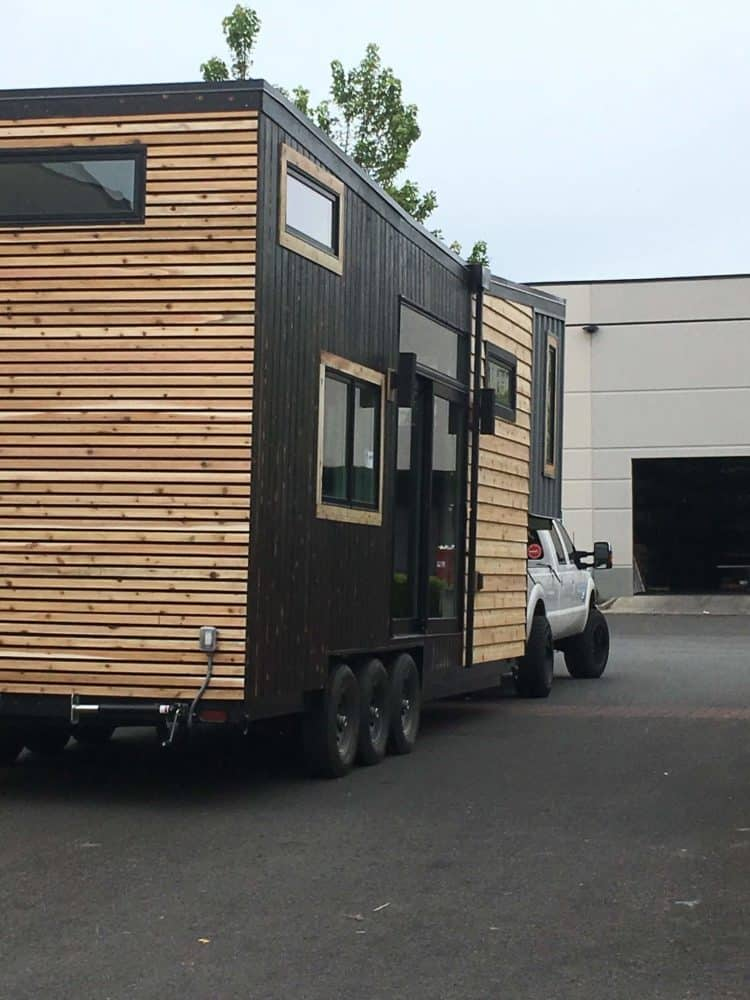
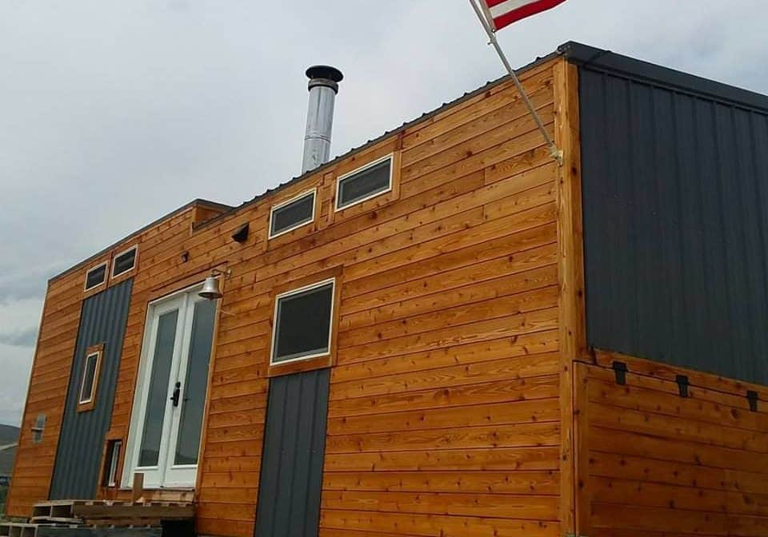

June 21, 2020

This article has been reviewed in accordance with our editorial policy.
As tiny houses rise in popularity so do questions and concerns about them. Here I am going to tackle everything you need to know about moving your tiny house.
What do you need to move your tiny house? Before moving your tiny home, make sure your truck is upgraded to tow something that heavy, your house is prepared, and the route is picked out. Let's look at how to do all of these and what else to look out for.
My husband and I have been living tiny for almost 4 years now and we have moved our tiny homes from Vegas to Utah to Virginia to the Pacific Northwest to Montana to Nevada. We have had a lot of experience with moving tiny houses and have seen people do it the wrong way, damaging their truck or home.
If you plan on moving your home please read this page in its entirety, to avoid damaging your property. However, if you have an oversize tiny house and are wanting someone else to move your home, then go to my other post here for more information. You do need a special license to haul an oversize load. Unless you have this, you will need to hire someone else.
The first thing you need to consider when towing anything over 10,000 lbs (4530 kg), is your truck. We have seen people blow their engines thinking their small truck could pull a tiny house.
Make sure your truck can handle the tow before you begin. You can do this by looking up the manufacturer's specs online to see your truck's tow capacity. To get a good idea of how much your tiny home will weigh, check out my post on the sizes and weights of tiny homes here.
Here is a complete list of things to consider before pulling a heavy tiny home.
Most hitches and balls are only rated for around 10,000 lbs (4530 kg), if you are towing something heavy this will need to be upgraded. I would recommend going with at least 20,000 lbs (9060 kg) unless you know the exact weight of your house.
To get a good idea of your tiny home's weight, check out my post on sizes and weights here.
Upgraded Hitch: Around $400-$500 in America
Larger Receiver: Around $400-$500 in America
Heavy Duty Ball: About $50
Total: $850-$1,050
This is not a requirement, but extremely helpful. If your house is long, it is very hard to control, especially when a semi-truck blows past you on the interstate going 70 mph (112 kph). The sway can be too much for some people and if you can't control it, you will flip your house and your truck. Anyone towing a house over 24 feet (7.3 m) long should have sway control on the truck.
Cost: Around $400-$800 in America
When towing something heavy it is very important to keep an eye on all of your temperatures, not just the factory gauges. Having aftermarket gauges installed for longer hauls is a must.
Cost: Around $200-$400 in America
One of the differences between trucks with factory hitches and those without is the cooling system. You can add a hitch to any truck, but you also need to be sure that you upgrade your cooling system. Even if your hitch is factory, you need to test your cooling system and be sure it will be sufficient for the tow load.
Cost: Around $500-$2,000 in America
Again, this is another key component, especially on the long hauls. Take your truck to an expert and tell them your plans and what you want to be checked, including your intake and exhaust.
Cost: Around $500 in America

After you are sure your truck is prepared for the haul, the next step is to get your home ready. Here are all the steps you need to take for this part.
In order to tow any trailer, you need to register it, or at least get a temporary moving permit. This is something that may be easily forgotten because you think of it as your house and not a trailer. Be sure that you have a license plate on your trailer.
Cost: Depends on your local Department of Motor Vehicles and the way you register the trailer. To learn more about how to register your trailer, check out our page here.
You can take your house to a truck stop and use their scales. This is important for two reasons, 1.) you need to know how heavy it is for your truck's capabilities and bridges but also 2.) you may be asked to show this if you are stopped. Towing over certain weights, depending on your location, will require a specialty license.
Cost: Around $15 in America
If you plan on moving your house a lot, then this is something you need to plan from the beginning. This may determine where you put your wood stove or solar equipment when you are first building your home.
However, if you will not be moving your house much after it is set up then this is not a priority. Although you need to account for this when you are towing. Place some of your items in the lighter parts of the home to even out the weight.
Be sure to look out for this because the heavier parts of the trailer (front or back end) may start to sag or it may be difficult to maneuver when one side is heavier than the other.
This is standard for towing a trailer, however, since many people forget their home is also a trailer, they tend to also forget these things. Be sure you're safe and operating properly when towing your home.
We knew someone towing a tiny house who did not check the bolts on the tires before he drove off. The bolts came loose and he lost the wheel. Safety is a priority when towing. You need to check the bolts and the tire pressure.
Not only do you need to keep an eye out for your tires, but you also need to check the structural integrity of your home. Often, after towing, bolts will loosen, from the constant shaking of being pulled up the road.
Check your trailer bolts every day you are towing. If they come loose and you don't catch it your house may slide or flip. We knew someone towing a tiny house across the country and one time they stopped hard and their house slid 6 inches (152 mm) on the trailer. A properly built house should not do this, but it can still cause problems if you let the bolts get too loose.
Another common step that can be easily missed. Since you are towing something so heavy every little mistake can lead to a big one. Be sure you check everything, including the trailer's brakes.
When moving your home you need to walk around and look at everything. Is there anything that can slide? Like your wood stove, anchor it to the floor. Is there anything that can fall? Like food in your cabinets, secure the doors or take it out.
Even things like ceiling fans need to be tied down. If they are free to swing about, the force may be so strong that they rip out of the ceiling.
We have moved enough times to know that if things CAN move, they will. One time our cupboard doors broke the tape we were using to secure them and flew open. Everything fell out. The glass broke. It took a couple of days for the smell of vinegar to go away.
This will include exhausts, for example: your water heater, outdoor lights, or anything else. This is important because otherwise you can be considered a wide load, and there are way more restrictions for those.
It is best to just take the extra step of doing these things than to run into tickets or fines for not doing it.
Be sure you lock up everything before you start your journey. You would not want these to accidentally fly open going down the road. Another concern is if you stop to get food or something else and forget about your house. Anyone could walk right in. Remember this is your home (or someone else's), so treat it like that.

Make sure you have your route picked out in advance and you have prepared for the height. Sticking to highways and main roads will help. But if you don't know the area be very cautious of low bridges.
Of course, checking the weather is always a good idea, but be sure to check for winds too. I live near lots of roads that do not allow a trailer longer than 6 feet (1.8 m) through in high winds. It will blow your house over. Check the places along your route where this could be a problem. Although you don't want to tow a 20,000 lb (9070 kg) house on any road with high winds.
Of course, you need to be cautious when towing heavy, and it is not a good idea to drive too fast. Turns that come up faster than you expected, potholes, or gusts of wind can all throw you off. Be safe and drive slowly.
This is important when pulling into gas stations or some other stops. If you scrape the bottom of your home you may damage the plumbing. Even besides that you would be scraping up your tiny home. Try to go in at an angle if you have to go up a steep approach.
This is especially important and more commonly damaged on longer homes.
If you are staying somewhere temporary then you can just use jacks and level out your house using a level. If you are somewhere more permanent you will still need to level the house correctly, but now you should place it on blocks on whatever structure you are using for support. It is not recommended to leave your house for a long period of time on the tires alone. It can damage the tires and your home will sway when you move too much in it or with the wind.
Keep in mind that you may have to recheck the leveling a few days later after it has had time to settle.
This is your last step! Reinstall anything you removed, untie your items, and put everything away. You are done!

These prices are based on our experience in America and will vary depending on your location. But this can give you a good starting point.
Upgrading Hitch, Receiver, and Ball: $850-$1,050
Sway Control: $400-$800
Aftermarket Gauges: $200-$400
Upgraded Cooling System: $500-$2,000
Good Exhaust and Intake: $500
Weighing it: $15
Fuel: You will need to calculate this based on fuel prices and distance. You will get, on average 7-9 miles per gallon.
Now keep in mind that your truck may not quite need all of these things, especially if the tiny house is very light. Find more information about the average weights of different-sized tiny homes, and how to make them lighter, on our page here.
However, typically you will need to do almost all of these things in order to properly tow your house. It would be a bad idea to skimp on the costs here and blow your engine, costing you more in the long run.
As you can see though, the price can add up quickly before you even take into account your fuel costs. If you are going to be moving your house a lot then this way will definitely be worth it in the long run. However, if you are only wanting a one-time move, to take your tiny home to a permanent location then it may be a better idea to simply hire a company to move it.
We have moved tiny houses for years now and we have seen smooth trips and rocky ones. Take our advice and follow all of these steps, even if it seems costly. You will be grateful you invested in sway control when you are going downhill with semi trucks blowing past you and you are fighting for control.
Having your house flip over on the highway because you did not invest in sway control is not worth the $400-$800 you could have saved.
If you do not feel comfortable moving your home yourself then you should look into hiring a company to do it for you. For these companies, you will be paying at least $2 per mile, and sometimes more. Here's a good website for finding a tiny house moving company.
If this is going to be a one-time move, then hiring a company may be more cost-effective and likely save you time as well. Another company will already have their trucks set up and the experience needed.
However, doing your research in this area will definitely come in useful. Making sure you have a reliable experienced driver could mean the difference between your home making it to its new location or not.
We hired a driver one time to move our home quite a distance and he did not know what he was doing. We found scrapes on our house when we got it and other things we had to fix. On top of that, he left it parked overnight, without the truck, and it was towed and he charged the bill to us.
Then he lost a wheel because he did not check the lug nuts before he left, which is extremely irresponsible for a truck driver. He took our home to a shop that replaced the wheel but used too big of bolts and cracked the wheel hub. The driver then paid them and took it to a different shop that actually fixed it. Again he charged us for both of these bills that were his fault.
In the end, it was a terrible experience and we decided we would never pay someone to move our home again. Be sure that you do your research and that the drivers have good reviews.
Also, be sure that you understand all of the requirements. For example, a trucking company will likely charge you by the hour if they show up and your home is not ready to be moved yet. Ask lots of questions when you hire someone and do some research.
We have lived in three different tiny homes now, two of which were mobile. We have been traveling around, living tiny, and off-grid for almost 4 years now. My husband's father has been a truck driver for many years, so my husband already had a good idea of how to tow most anything.
I remember the first home we built. David took his truck to get an upgraded hitch installed and sent me out to find a 20,000 lbs ball to use as well. Being that it was our first home we did everything we could to make sure it was done right.
That home was built in Las Vegas, NV, and then moved around in Utah. We lived in Utah, in our tiny house, for almost a year. In that time we moved our house to about five different locations. We became pros at being able to up and move.
We then moved it to Virginia. This is where we paid someone to move the house most of the way, due to our truck having more issues.
After we relocated to Virginia we moved the house around a couple of times, until we sold it. When we sold our home we also transported it to the buyers' location as well.
Our next house was a container home, which we built in Virginia.
After that, we had some great opportunities to move out west again and decided to go for it. Our plan this time was to build something really small and easily tow-able so we could move and travel around. We bought a 14-foot (4.3 m) cargo trailer and went to work.
This has been our "temporary" (now over a year!) traveling home. It works great for vacations and has been the best for all of our moving. Given the size, we have even towed it with an old jeep. However, it is not as spacious for long-term living.

We have bought land out west and are now in the process of building a small house on a foundation. Given that tiny houses are not legal in the county we live in, it will have to be 650 sq ft (60 sq m).
We are still planning to do lots of traveling, so we will have our current mobile tiny house, and then our home on a foundation. This home is by far the easiest to tow. We simply fold down the solar panels, take everything off of the counters, and head out.
We bought the trailer in Virginia and towed my car in it out to Vancouver, WA. We then moved around a few times until we found somewhere more permanent to stay.
We rented a small spot for a couple of months but then we found a better opportunity at my husband's work. He had started working for a large tiny house company and they had room for us to stay, in exchange for us helping keep an eye out on their property in the evenings and weekends. They had had some theft, so the situation was mutually beneficial.
This was near Portland, OR. There we finished building out the trailer and turned it into a home. Also, given my husband's job, he transported tiny homes to their new locations as well.
We took our home on vacation to Glacier National Park in Montana and Crater Lake in Oregon. It was so convenient to just move some items around and then leave. We didn't have to worry about packing or forgetting something, we had everything with us.
We then moved our home to Reno, NV. Again we moved around a couple of times until we bought land and are now on our journey of building a new home.
Overall, we have been transferring different types of tiny homes for years now and have lots of experience in the subject.